Ornament
A double sided ornament, with pictures of my family's cats on both sides
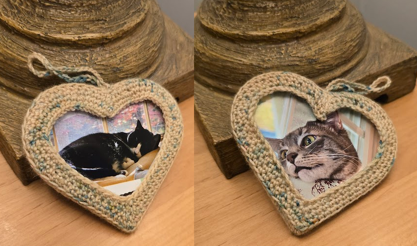
A Christmas gift for my uncle and grandma with a 3d printed interior, and a crocheted exterior
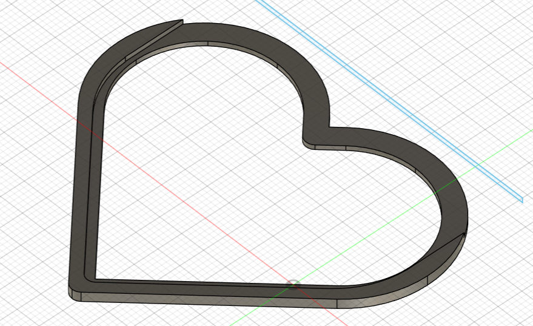
Original interior design, where a photo can slide into a slot
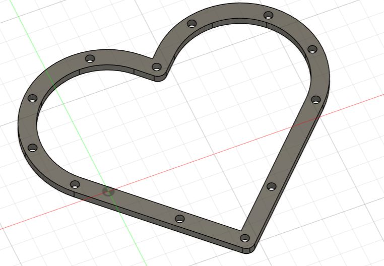
Second design, where the image can be sandwiched between two layers, and sewn together
Pendant
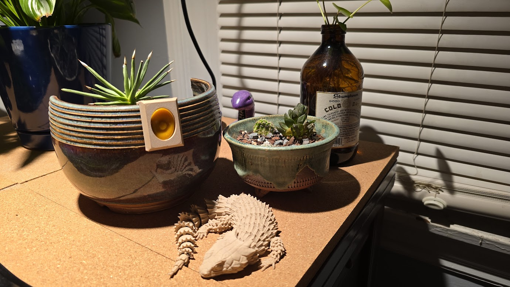
I found glass pendants of my partner and I's favorite candy, so I made a little
holder to display them
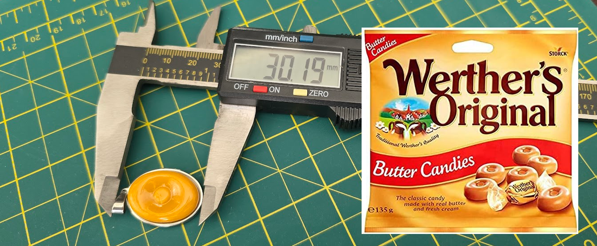
Started by taking measurements and drawing it up in Fusion360
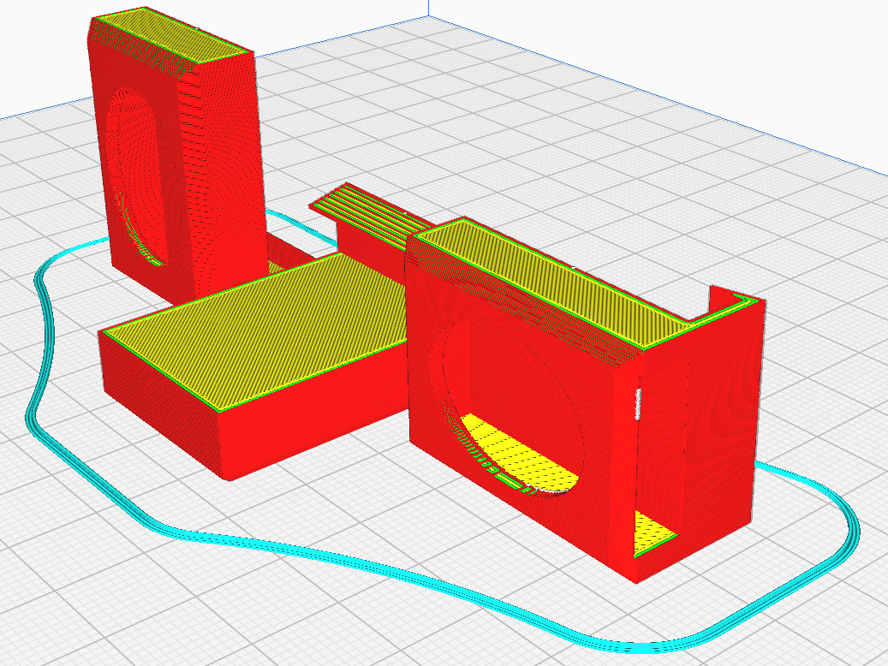
Tried many orientations so I could see how the top/bottom layers affected the
most important side, the front
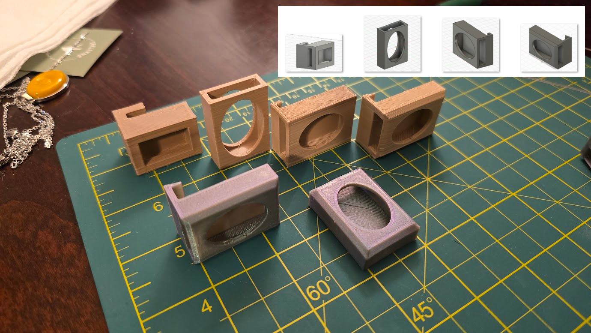
It took 6 different models to make it fit well and look right
Bulb 🌱
Mini low poly-renderings of the Pokemon Bulbasaur, in bulk, to hand out
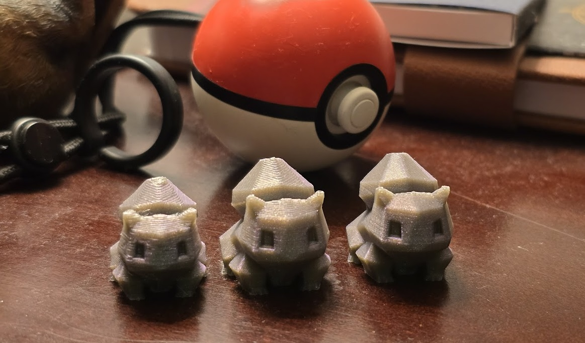
Each iteration got a bit finer
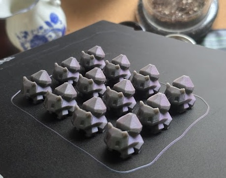
Made dozens of them to give to others at a Pokemon themed event
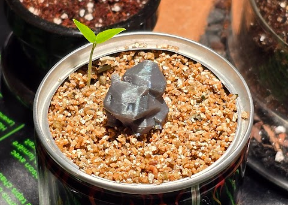
Very small and lad
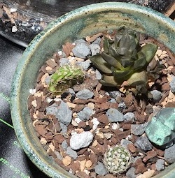
The filament was partially metallic material, making the color appear more green depending on the lighting/angle